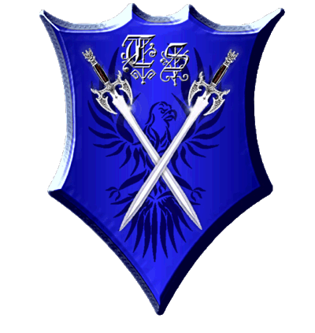

|

|
Das schwarze Brett
|
|
| Übersicht,
Anschläge und Stammtisch (RPG) |
|
Die Scherbe ist frei !!!
|
Almera
  |
*Ein General behängt mit vielen Orden tritt auf dem Marktplatz und verkündet mit stolzgeschwollener Brust*
Höret Völker der Scherbe,
Königin Almera, zu Montera, vom Bund der Stille, bringt euch frohe Kunde.
In den letzten Tagen wurde nach hartem Kampf der Feind und somit die Wurzel allen Übels der Scherbe besiegt. Altan und seine verkommene Sippschaft wurden in einer epochalen Schlacht geschlagen. Zuerst wurden auf Kathodos Türme vernichtet die sämtlichen Plünderern, Paktierern und anderem Pack Schutz boten. Doch Altan zeigte sich nach dieser Warnung wenig einsichtig, setzte weiter auf Terror und wähnte sich auf seiner Insel in Sicherheit und überzog von dort mit seinen zwielichtigen Freunden die Scherbe mit allerlei Unheil. Es musste also erneut und härter gegen ihn vorgegangen werden. So wurden kürzlich riesige Produktionen die lange in bitterer Sklaverei die Versorgung für Altans düsteres Heer schufen angegriffen und ebenfalls dem Erdboden gleichgemacht und damit deren Arbeiter befreit. Die Produktion fiel zusammen und das Rückrat jeder militärischen Macht des Frost-Heeres wurden somit zerschlagen. Armeen desertierten und lösten sich auf, die Allianz um Altan zerbrach wie gesprungenes Glas - Städte verloren erst ihre Einwohner, dann jedes Gebäude und Zeichen ihrer Existenz und bald schon wird man auf Kathodos von dieser Zeit der Unterdrückung nichts mehr als Ruinen sehen.
Freunde und Bürger lasst es mich sagen, diese Zerstörung war nötig um allen den Frieden und die Freiheit zu bringen, die Unterdrückung zu beenden und den Plünderern und Gesetzlosen jedwede Unterstützung und Zuflucht zunehmen.
Der Feind ist besiegt. Jeder auf der Scherbe kann nun in freiem Willen seinen Zielen und Wünschen folgen und braucht keine Angst vor Altan und seiner gottlosen Sippschaft zu haben.
Es ist nur eine Frage der Zeit bis auch die letzten verirrten Seelen samt Altan selbst ihr jähes Ende im Kreise ihrer gottlosen Kameraden finden.
Der Bund der Stille hat für euch "Bürger der Scherbe" diesen wichtigen Sieg für die Freiheit errungen und ruft deshalb Frieden über die Scherbe aus. Lebt, liebt und feiert euer Leben und genießt die kommenden Zeiten.
Wir danken jedem der uns in der Vergangenheit die Treue gehalten hat und so zu diesem Sieg beigetragen hat. Die Zeiten waren lang und hart doch es ist vollbracht, wir können stolz sein und jeder kann sorglos in ein neues Leben starten. Mögen eure künftigen Wege unbeschwerlich sein und mögen sie Neues und Schönes für euch bereit halten.
Hoch lebe die Scherbe
Hoch lebe die Freiheit
Hoch lebe Königin Almera
*Der General genießt den Applaus der jubelnden Menge und begibt sich als bald in den nächsten Ort um die frohe Kunde zu verbreiten*
((Allen Spielern auf beiden Seiten wünsche ich alles Gute und danke für 13 Jahre Spielspaß))
Königin Almera,
Vorsteherin von Montera,
Anführerin der glorreichen Nation "Bund der Stille"
Zur 19. Stunde am 69.Blumenmond im Jahre 466 |
31.12.15 2:48
 |
|
Lyra Callionymus
  |
*seufzt*
Das die Gläubigen am Ende die Verlierer waren, habt ihr jedoch nicht erwähnt.
Baronesse Lyra Callionymus,
Vorsteherin von Atlantis
Zur 15. Stunde am 70.Blumenmond im Jahre 466 |
31.12.15 7:18
|
|
Tessa Sesell
  |
Eine Königin ohne Glaubwürdigkeit...
So habe ich die Worte vernommen..."Jeder auf der Scherbe kann nun in freiem Willen seinen Zielen und Wünschen folgen und braucht keine Angst vor Altan und seiner gottlosen Sippschaft zu haben."...vor Altan und seiner Sippschaft habe ich weiterhin keine Angst...warum trachten eure Schergen immer noch nach unsrer Leben.
Oder ist das wer von dem "jeder" ausgenommen?
So passt gut auf euch auf liebe Scherblinge, der BdS schränkt die Bewegungsfreiheit immer noch ein.
Freifrau Tessa Sesell,
Vorsteherin von Jool Harbour,
Hohepriesterin im Dienste des einzig wahren Glaubens an Urvan
Zur 17. Stunde am 70.Blumenmond im Jahre 466 |
31.12.15 7:46
|
|
Fianora
 |
*schallend lacht*
Herzlichen Glückwunsch.... Königin der Nacht!
Baronesse Fianora,
Vorsteherin von Nordwind Feste,
Schmiedin der Nation
Zur 22. Stunde am 70.Blumenmond im Jahre 466 |
31.12.15 9:07
|
|
Abdiel der Gehörnte
  |
*applaudiert begeistert* Bravo, diese Narrenkappe steht Dir wirklich gut! BRAVO!!!
Sir Abdiel der Gehörnte,
Vorsteher von ...und Tschüss
Zur 4. Stunde am 71.Blumenmond im Jahre 466 |
31.12.15 10:21
|
|
Übersicht,
Anschläge und Stammtisch (RPG)
|
|
|
|